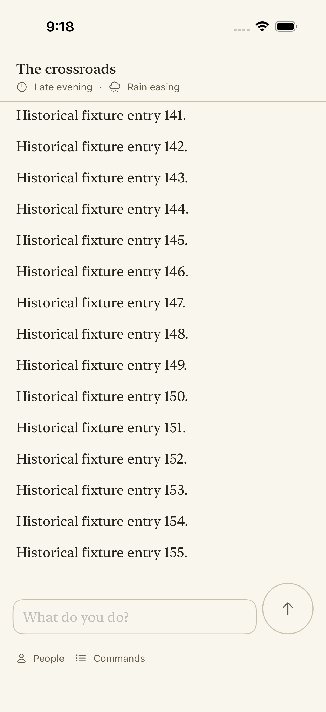

Actual simulator screenshots from the failed full gate. Both tests wait for the final fixture row before interacting, but the initial history is still arriving. Every opening row persisted an increasingly large save; the 540-row replay also exceeds the 256-event subscription buffer. This is fixture UI evidence, not live gameplay or physical-iPhone validation. The correction is tracked in issue #2361.
